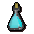
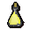
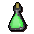
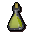
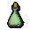
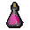
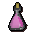
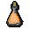
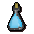

")
Herblore - Barbarian Potions
Getting Started
To start mixing potions in the manner of the barbarians, you must have a Herblore level of 4.
Click here to find out how to start learning barbarian training methods.
Enhancing Potions
 The life of a barbarian is a brutal one, and thus many of their skills are devoted to the art of warfare. Herblore is no different from this, and they have developed a way to make their potions heal while providing the usual benefits. Otto Godblessed is more than happy to share this information with you, but you must first master the art of Fishing with a heavy rod.
The life of a barbarian is a brutal one, and thus many of their skills are devoted to the art of warfare. Herblore is no different from this, and they have developed a way to make their potions heal while providing the usual benefits. Otto Godblessed is more than happy to share this information with you, but you must first master the art of Fishing with a heavy rod.
To enhance a potion, you simply add roe or caviar to a vial with two doses of potion in it. The fish eggs mix with the potion to make it lumpy, which is an unpleasant concoction to drink, but the benefits outweigh any loss of enjoyment.
If you do not have any 2 dose potions, you can decant a 4 dose potion into two 2 dose potions by using an empty vial on it.
 2 dose potion |
+ |   Roe or caviar |
= |  2 dose potion mix |
Each dose of potion will heal 30-60 life points.
The following potions can be enhanced in this way:
| Potion | Level Required |
Experience Gained |
Effect when drunk (not including life points restore) |
Attack mix |
4 |
8 | 3-12 Attack boost |
 Anti-poison mix |
6 |
12 | Cures poison and gives a small amount of immunity |
 Relicym's Balm mix |
9 |
14 | Cures disease |
|  Strength mix |
14 |
17 | 3-12 Strength boost |
 Stat restore mix |
24 |
21 | 10-39 restore on Defence, Attack, Strength, Magic and Ranged |
 Energy mix |
29 |
23 | Restores energy by 20% |
|  Defence mix |
33 |
25 | 3-12 Defence boost |
|  Agility mix |
37 |
27 | +3 Agility levels |
|  Combat mix |
40 |
28 | 3-12 Strength and Attack levels |
 Prayer restore mix |
42 |
29 | Restores 7-31 Prayer points (7-33 when carrying the Blessed Wrench) |
 Super Attack mix |
47 |
33 | 5-19 Attack boost |
|  Super anti-poison mix |
51 |
35 | Cures poison and gives a temporary immunity |
 Fishing mix |
53 |
38 | +3 Fishing levels |
|  Super energy mix |
56 |
39 | Restores energy by 40% |
 Hunter mix |
58 |
40 | +3 Hunter levels |
 Super Strength mix |
59 |
42 | 5-19 Strength boost |
|  Magic essence mix |
61 |
43 | +3 Magic levels |
 Super restore mix |
67 |
48 | 8-32 restoration on all stats except Constitution |
 Super Defence mix |
71 |
50 | 5-19 Defence boost |
 Super anti-poison+ mix |
74 |
52 | Cures poison and gives a longer immunity |
 Anti fire-breath mix |
75 |
53 | Grants a limited resistance to dragon fire |
|  Ranging mix |
80 |
54 | 4-13 Ranged boost |
 Magic mix |
83 |
57 | +4 Magic levels |
 Zamorak mix |
85 |
58 | 2-13 Strength boost 2-21 Attack boost 2-11 Defence Loss 20-110 life points loss |

More articles in
Herblore (Members Only)
|
|
|
Further Help
If this article does not help you, you may find the following sections of the RuneScape site helpful:
|
|